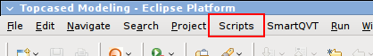
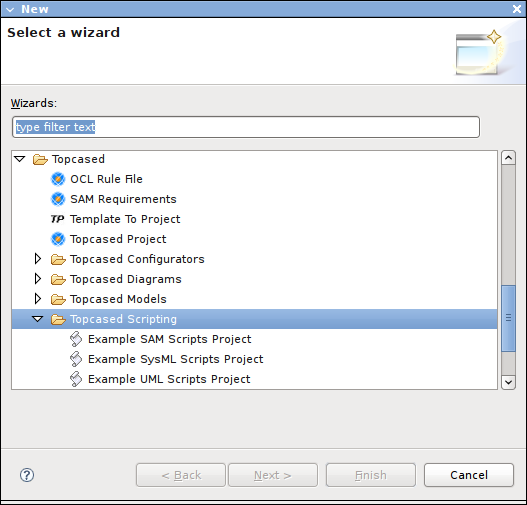
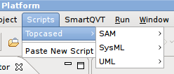

This document describes the new scripting support added to Topcased 2.1. This feature allows users to write scripts to automate some tasks in Topcased. The scripts are written in the JavaScript language and placed directly in the workspace: there is no need to deploy a new plugin or even to restart Eclipse, which makes them much more convenient than plugins for simple tasks.
The scripts have access to the current Topcased editor's selection, and can navigate in models, create/modify existing elements and save the results. They can also interact with the user to ask him/her for parameters and to display results.
Note that scripts are designed to automate simple tasks. They are not a replacement for plug-ins and do not have access to all the features of Topcased or the Eclipse platform. While for simple tasks scripts are simpler than plug-ins (especially easier to deploy), as complexity grows, it is better to write the functionality in Java as part of Topcased or an additional plug-in.
Topcased Scripting support is part of the Topcased Experimental feature. It depends on the Eclipse Monkey scripting engine, from Eclipse's Dash project but available on Topcased's update site. Normally all the dependencies are installed as part of the Topcased Experimental feature.
To check whether you have everything properly installed:
In the toplevel menu-bar of Eclipse (or Topcased RCP), you should have a "Scripts" menu.
If it is not there, you need to install Eclipse Monkey manually; it is available in the Topcased project update site at http://topcased-mm.gforge.enseeiht.fr/release/update-site3.4/, in the "Enabling Features" category.
Open the general creation wizard ("File > New > Other"). In the Topcased category, you should have a new (in Topcased 2.1) sub-category named "Topcased Scripting" with several choices, like "Example UML Scripts Project".
If this is not the case, make sure you have installed the Topcased Experimental feature, which contains the scripting support.
Although not strictly required, it is highly recommended to install the JavaScript Developer Tools if you want to write, edit or even simply look at existing scripts. This feature is available fromt the main Ganymede update site in the category "Web and Java EE Development".
Topcased Scripts are simple text files written in the JavaScript language, with some additional constraints:
.js extension. For
example umlAddClass.js.scripts directly inside
of a project in your workspace. The project does not have to be a Topcased
project, but keep in mind that non-Topcased projects are not visible by
default from the Topcased Navigator.The scripting infrastructure should automatically and dynamically detect all the properly placed scripts in you workspace (from any open project), and give access to them from the top-level "Scripts" menu. The scripts are organized there in sub-menus (and sub-sub-menus, etc.) according to annotations defined inside the scripts themselves. Because the basic scripting infrastructure is not specific to Topcased and can be used for other tasks, it is good practice to put all the Topcased scripts in a Topcased sub-menu. The example scripts provided by default are further organized according to the language/meta-model they target, so you have sub-menus like Topcased > SAM and Topcased > UML:
The documentation for each script (what it does, what it expects as input, etc.) is generally included directly in the script file, as comments.
To invoke a script, simply select it from the "Scripts" menu. Most of the Topcased scripts expect that a model is currently open in Topcased with some element selected as input. Each script can have different expectations, so you should read its comments to know what they are.
Scripts may interact with you by opening various dialogs to ask for additional informations and have several options to present their results:
Topcased 2.1 provides wizards to automatically create projects in your workspace with example script already written and ready to use. To use this feature, open the project creation wizard, and in the "Topcased > Topcased Scripting" category, select one of the example projects. There is one for each of SAM, SysML and UML, with example scripts for the corresponding language/meta-model.
The projects created by these wizards are called "Example XXX Scripts". Inside, you will find a scripts folder with example scripts.
The scripting infrastructure should have automatically detected the presence of the new scripts, and added them to the main "Scripts" menu, in the "Topcased > XXX" sub-menu. You can invoke these simply by selecting them in the menu, but most of them require a model of the right kind to be open with an input element selected. Open the scripts files and read their documentation on how to use each of them.
These scripts are simply provided as examples, to illustrate what is possible with the currently packaged services and provide a starting point for you to write your own.
The scripts are written in the JavaScript programming language. JavaScript is a standard language and will not be presented in this document. If you do not know it, there are many freely available guides available on the web. However, keep in mind that most of this documentation is targetted to using JavaScript in the context of a web browser to manipulate web pages. In the context of Topcased, the core language is the same but the objects and services the scripts have access to are very different: while a JavaScript program inside a browser manipulates objects which represent the current web page, Topcased scripts manipulate objects (called DOMs) which represent model elements and provide services for user interaction.
The set of services available to Topcased scripts can be extended through Eclipse plugins (see the last section of this document). Those which are provided by default in Topcased 2.1 are document later in this section.
As mentioned earlier, Topcased Scripts have some constraints on their name, location, and contents:
.js extension. For
example umlAddClass.js.scripts directly inside
of a project in your workspace. The project does not have to be a Topcased
project, but keep in mind that non-Topcased projects are not visible by
default from the Topcased Navigator.Scripts should begin with a specially formatted comment header, which contains some meta-data to indicate the scripting infrastructure how to use it:
/*
* Menu: Topcased > UML > Add class
* License: EPL 1.0
* DOM: http://download.eclipse.org/technology/dash/update/org.eclipse.eclipsemonkey.lang.javascript
* DOM: http://topcased-mm.gforge.enseeiht.fr/release/update-site3.4/org.topcased.scripting
* DOM: http://topcased-mm.gforge.enseeiht.fr/release/update-site3.4/org.topcased.scripting.uml
*/
Each line in this header defines one property of the script:
Menu gives the name of the script (here "Add class")
and its location inside the top-level "Scripts" menu. Sub-menus are
indicated by >. In the example above, the script will be
named "Add class" and appear in the "UML" sub-sub-menu of the "Topcased"
sub-menu.License is optional and indicate the license of the
script.DOM indicates that the script will make use of the
service or services identified by the given URI. A script can have
several such lines to use several DOMs. Each such line gives the script
access to one or several objects through which it can call services.
In the example above, the DOMs used are:
http://download.eclipse.org/technology/dash/update/org.eclipse.eclipsemonkey.lang.javascript:
this the core DOM which provides the basic infrastructure support. It should be present in all scripts.http://topcased-mm.gforge.enseeiht.fr/release/update-site3.4/org.topcased.scripting:
this DOM provides functions to allow Topcased Scripts to interact with
the user, asking for additional information and presenting their
results. It should be present in all Topcased scripts except in very
special circumstances.http://topcased-mm.gforge.enseeiht.fr/release/update-site3.4/org.topcased.scripting.uml:
this DOM provides services specific to UML models. Corresponding DOMs
are provided for SAM and SysML, with a similar identifier except for
the last part (resp. sam and sysml instead
of uml). Note that because SysML is an extension of UML,
many SysML scripts will want to use both the SysML and the UML DOMs.
Finally, the code of the script itself should be defined in a
top-level JavaScript funtion named main() and taking no
argument:
function main() { /* The script's code. */ }
To summarize, here is the skeleton of an empty script:
/*
* Menu: MyMenu > The script name
* License: EPL 1.0
* DOM: http://download.eclipse.org/technology/dash/update/org.eclipse.eclipsemonkey.lang.javascript
* DOM: http://topcased-mm.gforge.enseeiht.fr/release/update-site3.4/org.topcased.scripting
* DOM: http://topcased-mm.gforge.enseeiht.fr/release/update-site3.4/org.topcased.scripting.uml
*/
/**
* Documentation for the script.
*/
function main() {
/* The main code of the script, which will be executed when it is invoked from the menu. */
}
function aux(arg) {
/* Scripts can define additional JavaScript functions aside from the main one,
* and call them from there.
*/
}
In each of the example projects available through the wizards (described in the previous section), a script called "New script" is provided. It will ask you for a location and a name and automatically create a skeleton script of the correct form, configured for the corresponding language (e.g. the "Topcased > UML > New script" script will automatically include the UML DOM). This way you don't have to remember the details of this file sctucture and simply call the script when you want to write a new one.
We will now walk through a complete example script line-by-line, using the example script to add a new UML class to a model.
/*
* Menu: Topcased > UML > Add class
* License: EPL 1.0
* DOM: http://download.eclipse.org/technology/dash/update/org.eclipse.eclipsemonkey.lang.javascript
* DOM: http://topcased-mm.gforge.enseeiht.fr/release/update-site3.4/org.topcased.scripting
* DOM: http://topcased-mm.gforge.enseeiht.fr/release/update-site3.4/org.topcased.scripting.uml
*/
The script starts with a header as described above. It specifies the location of the script inside the "Scripts" menu, and indicates that it will make use of the UML-specific services in addition to the generic infrastructure.
/**
* This script create a new UML class in the current package. A package must be
* selected in the current UML editor.
*/
This is simply a block comment used to document the purpose of the script and its expectations to run successfuly.
function main() {
var name;
var parentPackage = uml.getSelection("Package");
if (parentPackage == null) {
output.error("A Package must be selected in the current UML editor to run this script.");
return;
}
This is the beginning of the script's code itself, inside a JavaScript
function called main(). It first declares the variables it will
use with var: it is good practice in JavaScript to declare all
the variables you will use in a function right at the beginning. The second
variable, parentPackage, is initialized from the currently
selected element in the UML editor using the uml.getSelection()
service. In this case we pass a type name to the service, so it will only
return a selection of the expected type. If there is no currently selected
element or it is not a Package, the service returns null, and
the script reacts by showing an error message (using the
output.error() service) and exiting. Otherwise, it continues
with:
name = input.askSimpleString("New class", "Name of the new class:", "Class");
if (name != null) {
uml.createClass(parentPackage, name);
}
}
This code use the input.askSimpleString() service to open a
dialog box and ask the user for a name (defaulting to "Class", the last
parameter). If the user cancels the dialog box, the return value is
null, and the script does nothing. Otherwise, it creates the
new class using the uml.createClass() service, which specifies
the package where to put the new class and its name.
In this section we document the services provided by the standard DOMs from Topcased 2.1.0.
org.topcased.scripting DOMFull identifier: http://topcased-mm.gforge.enseeiht.fr/release/update-site3.4/org.topcased.scripting
This is the general Topcased scripting DOM which most Topcased scripts will use. It is independant of the specific language/meta-model used and provides services to interact with the user.
When this DOM is used, the script has access to two new global JavaScript
objects named input and output, which provides
access to the following services:
input.askSimpleString(title, message[, defaultValue])
opens a dialog box which allows the user to enter a string. If the user
validates the dialog, the return value of the service is the string the
user provided. If the user cancelled the dialog, the service returns
null.input.ask(message) is a simple shortcut to
input.askSimpleString() when you do not need to sepcify a
dialog title or default value.input.askQuestion(title, question) opens a question
dialog with the specified title and question, which should be a simple
Yes/No question. The service returns true if the user answers
Yes, and false if he answers No.input.askConfirmation(title, question) opens a
confirmation dialog with the specified title and question. The service
returns true if the user confirmed, and false
otherwise.input.selectContainer(title, message) opens a dialog box
which allows the user to select a container location (project or folder)
in the workspace. The value returned by this service suitable to pass as a
location to output.createNewFile() (see below).input.selectResource(title, message) opens a dialog box
which allows the user to select a file from the workspace. The value it
returns is suitable to pass to input.readFile() (see below).
A variant of this service takes no parameters and uses a default title and
message.input.readFile(path) reads a text file contained inside
the workspace and returns its content as a string. The service returns
null if an error occured (for example the file does not
exists or is not a text file). The path argument can be either the return
value of input.selectResource(), a file path relative to the
workspace (e.g. "/MyProject/mydirectory/myfile.txt"), or an
IFile object (used by many Eclipse APIs).output.createNewFile(directory, fileName, contents) and
output.createNewFile(fullFilePath, contents) create a new
text file in the workspace with the specified contents. It returns
true on success, and false if an error occured.
In the first form (with 3 arguments), the directory argument can be either
the return value of input.selectContainer(), an Eclipse
IPath (returned by many Eclipse APIs) or a simple string of
the form "/MyProject/mydirectory" (always relative to the
workspace). In the second form with only two arguments, the first one can
be either a string with the full file path (e.g.
"/MyProject/mydirectory/myfile.txt") or an IFile
(returned by many Eclipse APIs). In both forms, the last arguments
contents must be a string which corresponds to the contents
to write to the file. The service returns true if it executed
successfuly, and false if an error occured.output.console(message) appends the specified message to
the Topcased Scripting console.output.clearConsole() clears the contents of the console.
This can also be done manually by the user from the Console View's
toolbar.output.info(title, message) and
output.info(message) open an information dialog box the
specified (optional) title and message.output.warning(title, message) and
output.warning(message) open an warning dialog box the
specified (optional) title and message.output.error(title, message) and
output.error(message) open an error dialog box the specified
(optional) title and message.org.topcased.scripting.sam DOMFull identifier: http://topcased-mm.gforge.enseeiht.fr/release/update-site3.4/org.topcased.scripting.sam
This DOM provides services to manipulate SAM models through a global
object named sam.
Services provided:
sam.getSelection() returns the selected element in the
currently open SAM editor, or null if there is none. If
multiple elements are selected, only the first one is returned.sam.getSelection(typeName) is the same as
sam.getSelection(), but returns null if the
selected element is not of the specified type. For example, if a scripts
requires that a System is selected it can simply call
sam.getSelection("System").sam.save() saves the currently open SAM editor.sam.getFactory() returns a SAMFactory object,
which can be use to create any SAM elements by calling the appropriate
createXXX() method. For example to create a State:
sam.getFactory().createState()sam.isA(element, typeName) takes a model element and a
type name, and returns true if the element is an instance of
the named type, false otherwise. For example, to test if an
element is an Automaton (or any sub-type): sam.isA(elt,
"Automaton").sam.createSystem(model, name) and
sam.createSystem(system, name) create a new SAM system, give
it the specified name and add it into the specified model or parent
system. The new system is returned.sam.createSystem(name) creates a new system, sets its
name and returns it.sam.createAutomaton(system, name) and
sam.createAutomaton(name) create a new automaton, set its
name, add it into a parent system if specified, and return the new
automaton.org.topcased.scripting.sysml DOMFull identifier: http://topcased-mm.gforge.enseeiht.fr/release/update-site3.4/org.topcased.scripting.sysml
This DOM provides services to manipulate SysML models through a global
object named sysml. Note that because SysML is an extension of
UML, the sysml object mostly provides SysML-specific services.
Most SysML scripts will want to use the UML DOM in addition to the SysML one
to manipulate SysML model elements which are actually UML objects.
Services provided:
sysml.getSelection() returns the selected element in the
currently open SysML editor, or null if there is none. If
multiple elements are selected, only the first one is returned.sysml.getSelection(typeName) is the same as
sysml.getSelection(), but returns null if the
selected element is not of the specified type. For example, if a scripts
requires that a Block is selected it can simply call
sysml.getSelection("Block").sysml.save() saves the currently open UML editor.sysml.getFactory() return a SysMLFactory
object, which can be use to create any SysML elements by calling the
appropriate createXXX() method. For example to create a
Requirement: uml.getFactory().createRequirement()sysml.getUMLFactory() return a UMLFactory
object, which can be used to create any UML elements for use inside a SysML
model, by calling the appropriate createXXX() method.sysml.createClass(name) creates a new UML class, sets its
name as specified and returns the new Class.sysml.createClass(parentPackage, name) does the same as
sysml.createClass(name) and additionaly places the new class
into the specified Package.sysml.createPackage(name) creates a new UML Package, sets
its name and returns it.sysml.createBlock(name) creates a new SysML Block, sets
its name and returns it.sysml.createBlock(parentPackage, name) creates a new
SysML Block, sets its name, put it in the specified Package and returns
it.sysml.isA(element, typeName) takes a model element and a
type name, and returns true if the element is an instance of
the named type, false otherwise. For example, to test if an
element is a Block (or any sub-type): sysml.isA(elt,
"Block").org.topcased.scripting.uml DOMFull identifier: http://topcased-mm.gforge.enseeiht.fr/release/update-site3.4/org.topcased.scripting.uml
This DOM provides services to manipulate UML models through a global
object named uml.
Services provided:
uml.getSelection() returns the selected element in the
currently open UML editor, or null if there is none. If
multiple elements are selected, only the first one is returned.uml.getSelection(typeName) is the same as
uml.getSelection(), but returns null if the
selected element is not of the specified type. For example, if a scripts
requires that a Package is selected it can simply call
uml.getSelection("Package").uml.save() saves the currently open UML editor.uml.getFactory() returns a UMLFactory object,
which can be use to create any UML element by calling the appropriate
createXXX() method. For example to create a Property:
uml.getFactory().createProperty()uml.createClass(name) creates a new UML class, sets its
name as specified and returns the new class.uml.createClass(parentPackage, name) does the same as
uml.createClass(name) and additionaly places the new class
into the specified Package.uml.createPackage(name) creates a new UML Package, sets
its name and returns it.uml.isA(element, typeName) takes a model element and a
type name, and returns true if the element is an instance of
the named type, false otherwise. For example, to test if an
element is a Package (or any sub-type): uml.isA(elt,
"Package").The DOMs described above give access to a limited set of objects, which
should be seen as entry points into the full APIs available to the scripts.
The objects returned by the DOM methods (for example
getSelection() or getFactory()) are actually Java
objects, and your scripts have access to all the (public) methods these
objects provide.
For example, if you do var a = uml.createClass("A"), the
value returned of a is a Java object from the UML meta-model,
which provides many methods to query and modify the UML class it represents:
a.getName(), a.getSuperClasses(),
a.getOwnedOperations(), a.setIsAbstract(),
etc.
This short manual can not reproduce the many methods available on all the elements of the SAM, SysML and UML meta-models, or in the underlying Eclipse and Topcased platforms. Refer to the corresponding API references in the Topcased Developer Guide for a complete list of methods you can use on these objects.
The scripting capabilities can be extended by creating new DOMs, which give access to other parts of the Eclipse and Topcased platforms and offer new services.
To create a new DOM, you need to write an Eclipse plugin which extends
the org.eclipse.eclipsemonkey.dom extension point and specifies
one or several implementation(s) of the IMonkeyDOMFactory Java
interface. Each such implementation will provide a new global object to the
scripts using the DOM, and the public Java methods defined on the DOM object
will be available to the scripts.
Refer to the documentation and source code of the Eclipse Monkey framework and the already provided Topcased DOMs for more technical details and example code.
Copyright (c) 2008 AIRBUS FRANCE and others. All rights reserved.